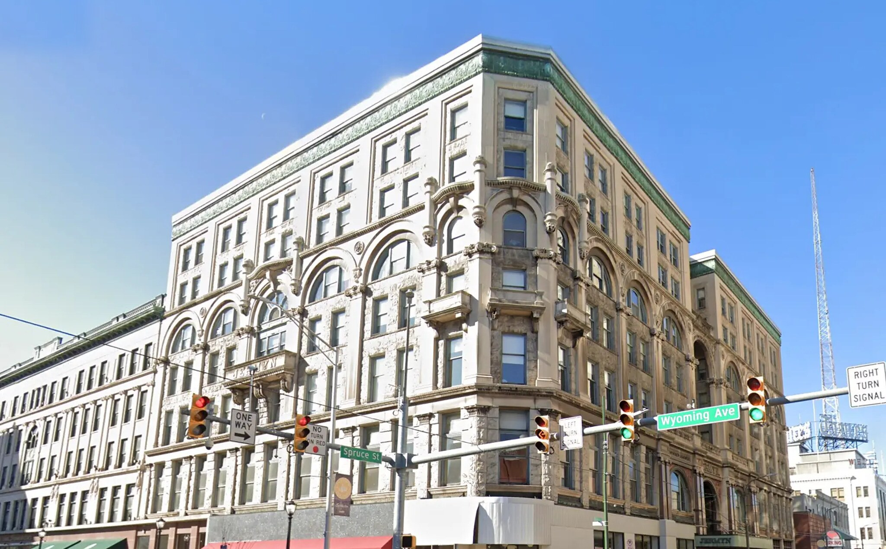
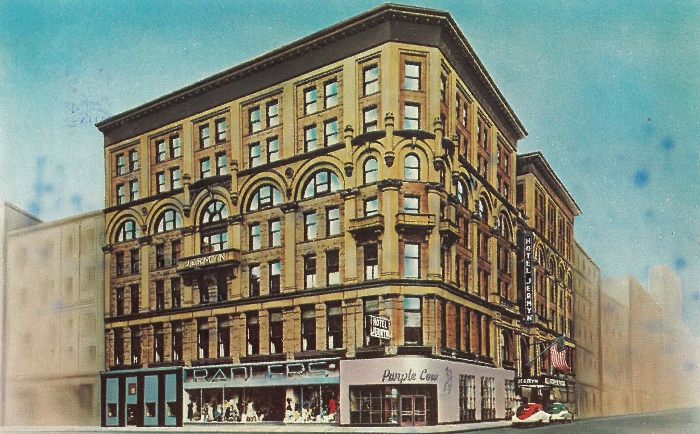

Scranton, Pennsylvania · Then & Now
The Hotel
Jermyn
By night, dinner and dancing in the Manhattan Club or the Omar Room; by day, lunch and shopping. Radler’s dress shop and the Purple Cow sandwich counter are both lettered across the ground floor here, tucked either side of the Globe’s men’s shop. Radler’s closed in 1963 and the Purple Cow moved out in 1965. The building stayed.
1950s
Today


Drag to compare · arrow keys to scrub
ThenPostcard, Hotel Jermyn, Spruce Street at Wyoming Avenue, 1950s.
NowGoogle Street View. Imagery © Google.
On the fitThe Street View camera happened to stand almost where the postcard photographer did, so this pair needed only a crop and a scale.